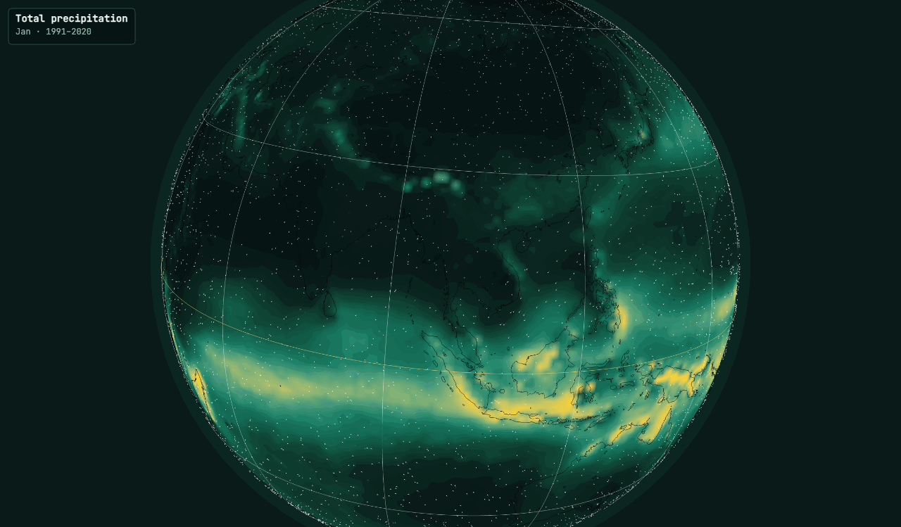
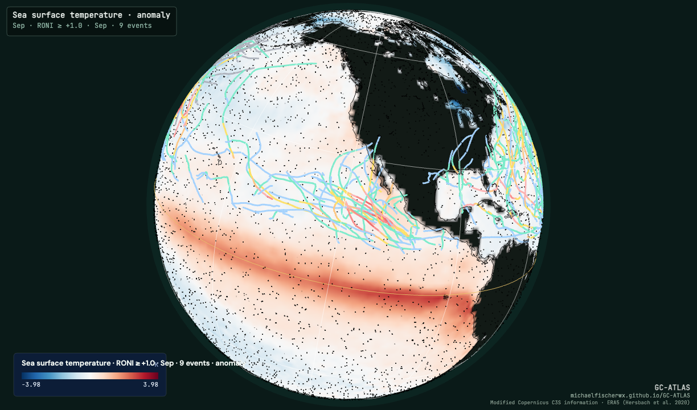
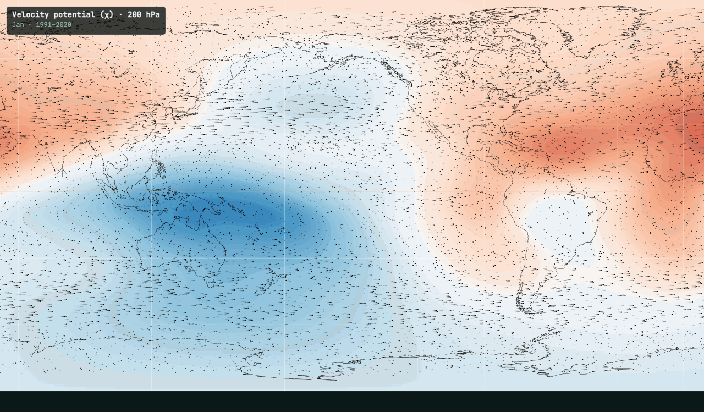
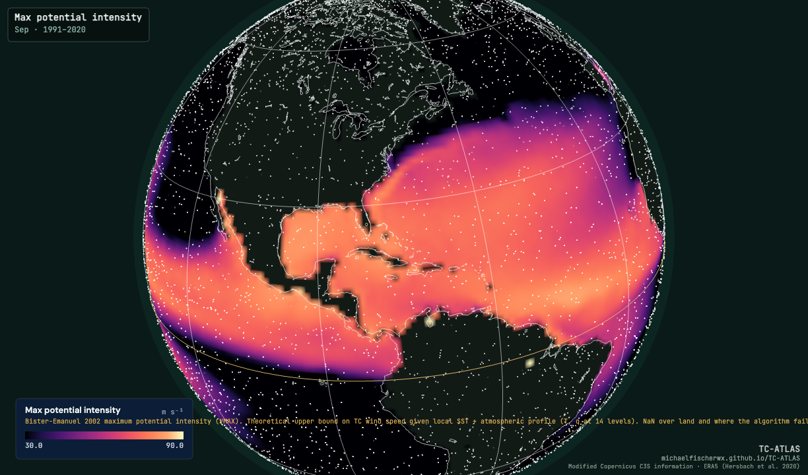
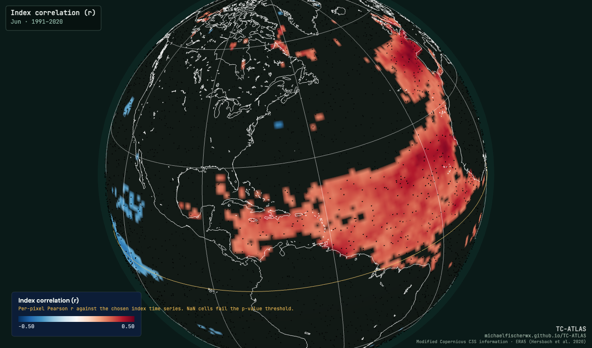
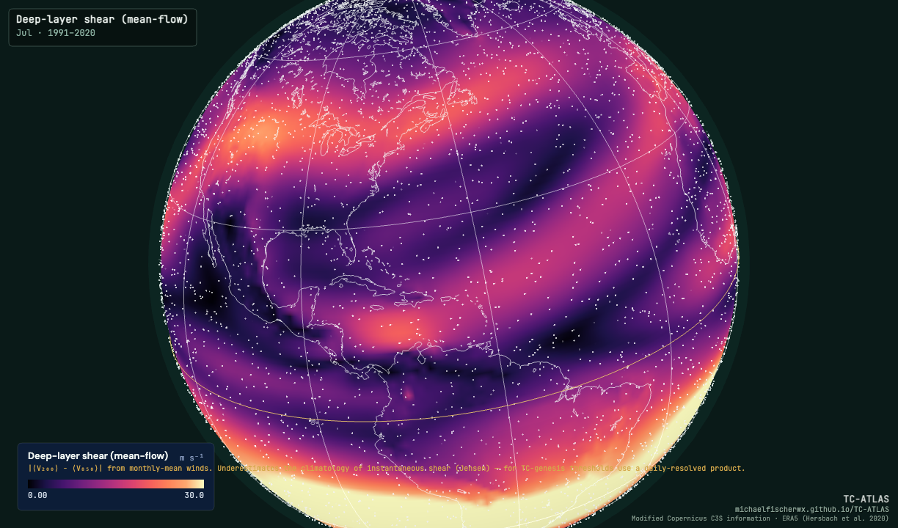

TC Climatology
Best-track statistics from IBTrACS v04 and an interactive reanalysis globe with TC tracks. Composite, correlate, and contextualize across basins and decades.
Global Tropical Cyclone Climatology
IBTrACS v04 — loading…
Accumulated Cyclone Energy (ACE) by Year Click to explore →
Named Storms per Season by Category Click to explore →
Peak Intensity by Basin Click to explore →
24-h Intensity Change (Overwater) Click to explore →
Storms by Basin
Latitude of Peak Intensity Click to explore →
Featured views
Or jump straight into a TC-relevant scene — click any tile to open the globe pre-loaded.

JAS monsoon precipitation
Total precipitation in August. The W. African + Indian summer monsoons — seedbed for African Easterly Waves that grow into Atlantic TCs.

El Niño SST anomaly · Sep
Composite of years where RONI ≥ +1.0 in September — the warm Pacific tongue + cool W. Atlantic pattern that suppresses Atlantic TC activity.

Walker circulation · χ at 200 hPa
Velocity potential climatology at upper levels. Tropical large-scale rising/sinking branches that ENSO modulates — collapsed Walker → enhanced Atlantic shear.

Maximum potential intensity · Sep
Bister–Emanuel MPI from ERA5 at the Atlantic peak. Theoretical upper bound on TC wind speed given the local SST + atmospheric profile (computed via Gilford's tcpyPI).

SST × Atlantic ACE — June
Pre-season SST as an Atlantic-ACE predictor. Land on June SST, then open Index Correlation in the sidebar and choose ACE — N. Atlantic to compute the per-pixel r-map.

Deep-layer shear · July
|⟨V₂₀₀⟩ − ⟨V₈₅₀⟩| from monthly-mean winds. The shear corridor over the Atlantic that limits MDR genesis and reorganizes mature TCs.